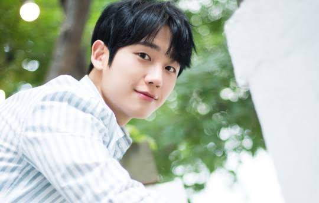

Jung Hae-in (born April 1, 1988) is a South Korean actor. He first made an appearance in AOA Black's music video for "Moya" in 2013 and officially debuted through the TV series Bride of the Century the next year. He gained recognition for his supporting roles in 2017 television series While You Were Sleeping and Prison Playbook. Jung had his first starring role in the 2018 drama Something in the Rain.
Name: Jung Hae-In
Hangul: 정해인
Born: April 1, 1988
Birthplace: South Korea
Height: 178 cm
Blood Type:
Instagram: holyhaein
Guardian: The Lonely and Great God | Dokkaebi (tvN / 2016-2017) - Tae-Hee (ep.7-8)
While You Were Sleeping | Dangshini Jamdeun Saie (SBS / 2017) - Han Woo-Tak
Something in the Rain | Bab Jal Sajooneun Yebbeun Noona (JTBC / 2018) -Seo Joon-Hee
Tune in for Love | Yooyeolui Eumakaelbum (2019) - Hyun-Woo Movie
One Spring Night | Bombam (MBC / 2019) - Yu Ji-Ho
A Piece of Your Mind | Banui Ban (tvN / 2020) - Moon Ha-Won